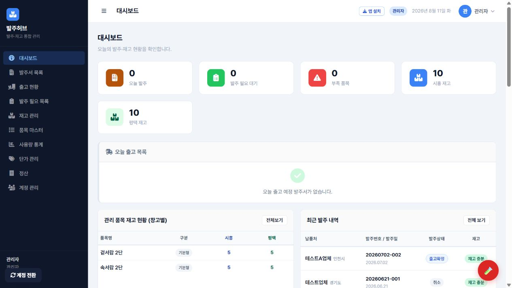

누락 없는 발주서
품목과 규격을 선택하면 수량과 금액을 자동 계산해 실수를 줄입니다.
발주서 작성부터 실시간 재고 확인, 출고와 정산까지.
흩어진 업무를 발주허브 하나로 빠르고 정확하게 관리하세요.

WHY ORDER HUB
반복되는 계산과 확인은 발주허브가 맡을게요.
품목과 규격을 선택하면 수량과 금액을 자동 계산해 실수를 줄입니다.
발주와 출고가 재고에 바로 반영되어 부족 자재를 미리 확인할 수 있습니다.
출고 상태부터 거래명세서와 월별 정산까지 같은 데이터로 이어집니다.
업체·납품처·품목을 선택하고 수량만 입력하세요.
가용 재고와 발주 필요 수량을 자동으로 계산합니다.
출고 체크와 거래명세서, 정산 내역까지 연결됩니다.
BEFORE & AFTER
엑셀과 메신저 사이를 오가던 시간을 되찾으세요.
MADE FOR YOUR TEAM
역할에 맞는 화면으로 필요한 정보만 명확하게 보여줍니다.
INSTALL GUIDE
먼저 로그인 화면의 앱 설치 버튼을 이용하세요. 가장 쉽고 빠른 방법입니다.
발주허브를 연 뒤 로그인 창의 앱 설치 버튼을 누르고, 화면에 나오는 설치 안내를 따르면 됩니다.
앱 설치 버튼이 보이지 않거나 눌러도 설치되지 않을 때만 아래 방법을 따라주세요.
다른 브라우저에서 홈 화면에 추가 메뉴가 보이지 않으면 Safari로 열어 주세요.
Safari에서 발주허브 주소를 직접 입력한 뒤 위 순서대로 추가하면 됩니다.
삼성 인터넷 — 메뉴(☰) → 현재 페이지 추가 → 홈 화면
Microsoft Edge — 메뉴(…) → 휴대전화에 추가 또는 앱 설치
네이버 웨일 — 메뉴 → 홈 화면에 추가
메뉴 이름은 조금씩 달라도 대부분 홈 화면에 추가 또는 앱 설치 항목이 있습니다.